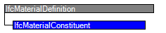

Natural language names
 | Materialbestandteil |
 | Material Constituent |
 | Matériau constitutif |
| Materialbestandteil |
| Material Constituent |
| Matériau constitutif |
| Item | SPF | XML | Change | Description | IFC2x3 to IFC4 |
|---|---|---|---|---|
| IfcMaterialConstituent | ADDED |
IfcMaterialConstituent is a single and identifiable part of an element which is constructed of a number of part (one or more) each having an individual material. The association of the material constituent to the part is provided by a keyword as value of the Name attribute. In order to identify and distinguish the part of the shape representation to which the material constituent applies the IfcProductDefinitionShape of the element has to include instances of IfcShapeAspect, using the same keyword for their Name attribute.
NOTE See the "Material Use Definition" at the individual element to which an IfcMaterialConstituentSet may apply for a required or recommended definition of such keywords as value for IfcMaterialConstituent.Name.
HISTORY New entity in IFC4
| # | Attribute | Type | Cardinality | Description | C |
|---|---|---|---|---|---|
| 1 | Name | IfcLabel | [0:1] | The name by which the material constituent is known. | X |
| 2 | Description | IfcText | [0:1] | Definition of the material constituent in descriptive terms. | X |
| 3 | Material | IfcMaterial | [1:1] | Reference to the material from which the constituent is constructed. | X |
| 4 | Fraction | IfcNormalisedRatioMeasure | [0:1] | Optional provision of a fraction of the total amount (volume or weight) that applies to the IfcMaterialConstituentSet that is contributed by this IfcMaterialConstituent. | X |
| 5 | Category | IfcLabel | [0:1] | Category of the material constituent, e.g. the role it has in the constituent set it belongs to. | X |
| ToMaterialConstituentSet | IfcMaterialConstituentSet @MaterialConstituents | [1:1] | Material constituent set in which this material constituent is included. | X |

| # | Attribute | Type | Cardinality | Description | C |
|---|---|---|---|---|---|
| IfcMaterialDefinition | |||||
| AssociatedTo | IfcRelAssociatesMaterial @RelatingMaterial | S[0:?] | Use of the IfcMaterialDefinition subtypes within the material association of an element occurrence or element type. The association is established by the IfcRelAssociatesMaterial relationship. | X | |
| HasExternalReferences | IfcExternalReferenceRelationship @RelatedResourceObjects | S[0:?] | Reference to external references, e.g. library, classification, or document information, that are associated to the material. | X | |
| HasProperties | IfcMaterialProperties @Material | S[0:?] | Material properties assigned to instances of subtypes of IfcMaterialDefinition. | X | |
| IfcMaterialConstituent | |||||
| 1 | Name | IfcLabel | [0:1] | The name by which the material constituent is known. | X |
| 2 | Description | IfcText | [0:1] | Definition of the material constituent in descriptive terms. | X |
| 3 | Material | IfcMaterial | [1:1] | Reference to the material from which the constituent is constructed. | X |
| 4 | Fraction | IfcNormalisedRatioMeasure | [0:1] | Optional provision of a fraction of the total amount (volume or weight) that applies to the IfcMaterialConstituentSet that is contributed by this IfcMaterialConstituent. | X |
| 5 | Category | IfcLabel | [0:1] | Category of the material constituent, e.g. the role it has in the constituent set it belongs to. | X |
| ToMaterialConstituentSet | IfcMaterialConstituentSet @MaterialConstituents | [1:1] | Material constituent set in which this material constituent is included. | X | |
<xs:element name="IfcMaterialConstituent" type="ifc:IfcMaterialConstituent" substitutionGroup="ifc:IfcMaterialDefinition" nillable="true"/>
<xs:complexType name="IfcMaterialConstituent">
<xs:complexContent>
<xs:extension base="ifc:IfcMaterialDefinition">
<xs:sequence>
<xs:element name="Material" type="ifc:IfcMaterial" nillable="true"/>
</xs:sequence>
<xs:attribute name="Name" type="ifc:IfcLabel" use="optional"/>
<xs:attribute name="Description" type="ifc:IfcText" use="optional"/>
<xs:attribute name="Fraction" type="ifc:IfcNormalisedRatioMeasure" use="optional"/>
<xs:attribute name="Category" type="ifc:IfcLabel" use="optional"/>
</xs:extension>
</xs:complexContent>
</xs:complexType>
ENTITY IfcMaterialConstituent
SUBTYPE OF (IfcMaterialDefinition);
Name : OPTIONAL IfcLabel;
Description : OPTIONAL IfcText;
Material : IfcMaterial;
Fraction : OPTIONAL IfcNormalisedRatioMeasure;
Category : OPTIONAL IfcLabel;
INVERSE
ToMaterialConstituentSet : IfcMaterialConstituentSet FOR MaterialConstituents;
END_ENTITY;
 EXPRESS-G diagram
EXPRESS-G diagram Link to this page
Link to this page